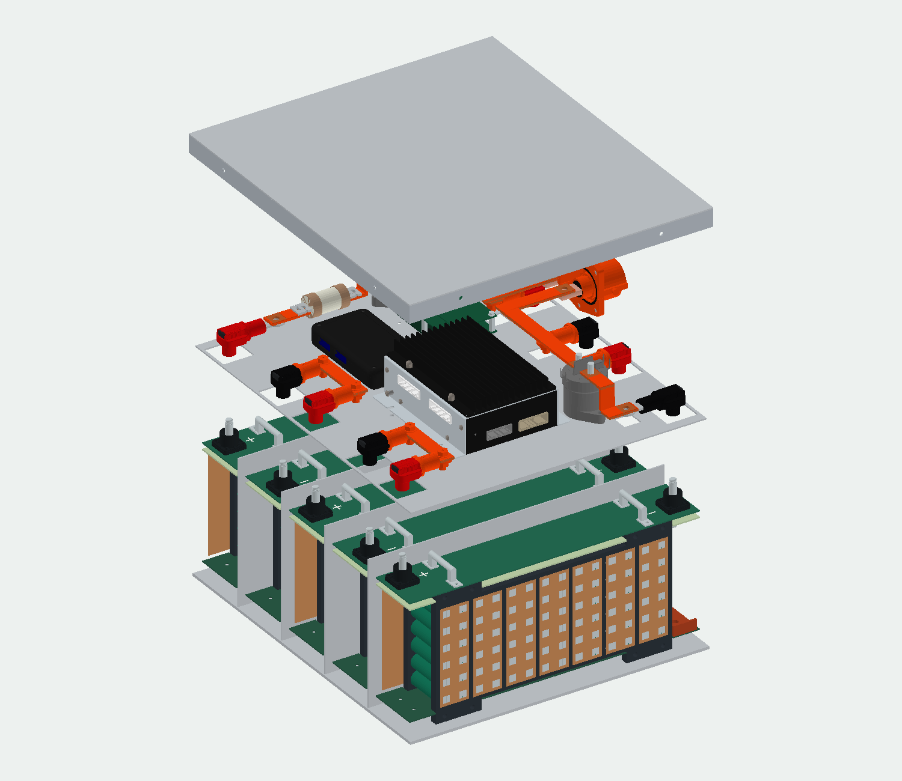
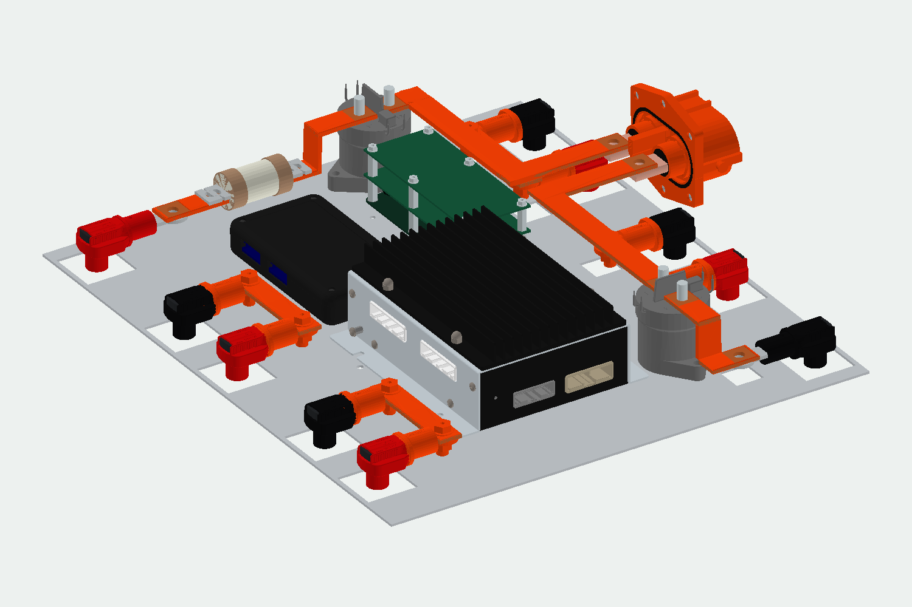

교대 단자, 같은 팬 방향
A/B 단자 위치를 달리해 인접 세그먼트의 직렬 연결을 짧게 배치합니다. 팬 방향은 일정하게 유지합니다.
SEGMENT / A + BELECTRIC FORMULA / ACCUMULATOR
5개의 교대형 세그먼트, 상부 전장 트레이, 구리 버스바와 겹침식 커버. 조립 구조부터 분해 동선까지 확인하는 70S6P 배터리팩 설계 포트폴리오입니다.
비공개 저장소용 · 이 페이지와 뷰어는 다운로드 후 브라우저에서 실행됩니다.

01 / DESIGN INTENT
하부의 세그먼트와 상부의 전장품을 분리하고, 전력 연결과 탈착 순서를 함께 검토했습니다.
A/B 단자 위치를 달리해 인접 세그먼트의 직렬 연결을 짧게 배치합니다. 팬 방향은 일정하게 유지합니다.
SEGMENT / A + BBMS는 90° 회전 배치하고, 온도 확장모듈은 바닥에 독립 체결합니다. IMD 위에는 추가 PCB 두 장의 공간을 확보했습니다.
PACKAGING / SERVICE세그먼트 연결쌍은 직선 구리바로 구성합니다. 주황색 수축튜브는 별도 두께를 가진 표면 형상으로 표현했습니다.
HV ROUTING / INSULATION뚜껑의 외측 벽이 박스 벽을 25mm 덮습니다. 바깥에서 넣는 볼트와 안쪽 벽의 팝너트로 네 면을 체결합니다.
ENCLOSURE / FASTENING02 / EXPLORE THE MODEL

12단계 분해 · 벽 투명도 · 부품별 표시
A/B 형식 전환 · 셀 홀더 · 일체형 끝단판
3D 뷰어는 실제 프로젝트의 모델 생성 코드를 사용합니다. WebGL 지원 브라우저가 필요하며 파일을 처음 열 때 형상 계산 시간이 걸릴 수 있습니다.
03 / PARTS LIBRARY
64개 형상 그룹, A/B 변형을 포함한 85개 STL. 혼합 체결부는 세트 단위입니다.
| 부품 / 참조 | 분류 | 전체 수량 | 설계 상태 | STL 다운로드 |
|---|
STL은 조립 좌표를 유지하는 표면 형상입니다. 제품별 나사산·공차 및 혼합 체결부 단품 수량이 확정된 구매용 BOM은 아닙니다.
04 / DELIVERABLES
DESIGN STATUS
현재 결과물은 형상과 배치를 검토하는 모델입니다. 퓨즈 전류 정격, 커넥터 직결 링 접속부, 팝너트 규격, 추가 PCB 두 장의 부품 구성은 미확정입니다. 열·구조·전기 안전 시험이나 제작 승인을 완료한 설계로 제시하지 않습니다.
수행한 검증과 제한 보기 ↗